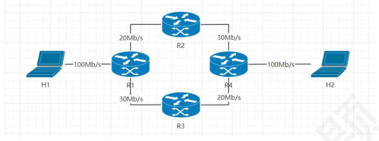
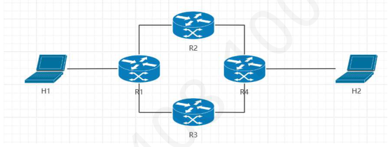

第 1 题
下列关于计算机网络的叙述中，最能准确描述计算机网络的是？
- A．能同时执行多个任务的计算机系统
- B．用于连接分散分布的计算机的物理链路集合
- C．多个具备独立功能的计算机经通信链路连接而成的系统
- D．能够共享硬件、软件和数据资源的系统
答案与解析
答案：C
选项A 描述的是多任务操作系统的特性，而非计算机网络的定义，故错误。选项B 仅指出了物理连接，这是网络的组成部分，但不是对网络的完整和准确描述。网络不仅仅是物理链路的集合，还包括了协议和其他软硬件。选项C 是对计算机网络的准确定义，计算机网络有三个基本要素：自治计算机、互连、集合体。选项D 描述的是计算机网络的主要功能之一（资源共享）。
第 2 题
计算机网络最主要的功能是？
- A．数据通信与资源共享
- B．提高计算机的可靠性与处理能力
- C．分布式处理与负载均衡
- D．信息检索与集中管理
答案与解析
答案：A
计算机网络建立的两个最基本和最主要的功能是数据通信（实现用户间的信息交换）和资源共享（使网络中的硬件资源、软件资源、数据资源等能被多个用户共享）。提高可靠性和处理能力可以通过网络实现（如分布式系统、计算机集群），但并非所有网络最主要的功能，故B错误。分布式处理与负载均衡是基于网络发展起来的应用和技术，属于网络功能的应用和扩展，故C 错误。信息检索和集中管理也是网络提供的应用功能，但不是最核心和主要的功能，故D 错误。
第 3 题
从工作方式上看，计算机网络主要由哪两部分组成？
- A．边缘部分和核心部分
- B．硬件和软件
- C．物理层和网络层
- D．路由器和主机
答案与解析
答案：A
从工作方式的角度划分，计算机网络通常被分为边缘部分和核心部分。边缘部分由所有连接到互联网上、供用户直接使用的主机组成。这部分是用户进行网络应用和通信的地方。核心部分由大量网络和连接这些网络的路由器组成，其主要任务是为边缘部分提供高效、可靠的数据传输服务。
第 4 题
现有一个网络仅覆盖一栋办公楼，且速率较高，误码率较低，这种网络属于？
- A．广域网（WAN）
- B．城域网（MAN）
- C．局域网（LAN）
- D．个人区域网（PAN）
答案与解析
答案：C
局域网（LAN）覆盖范围小（几米到几公里），通常用于一栋楼、一个办公室或一个园区，传输速率高，误码率低。城域网覆盖范围介于LAN 和WAN 之间，通常覆盖一个城市。广域网(WAN）覆盖范围大，通常跨越国家或地区。个人区域网(PAN)覆盖范围非常小，通常指个人设备之间的连接。题目中，仅覆盖一栋办公楼的网络显然是局域网。
第 5 题
在某种网络拓扑结构中，所有站点都连接到一条共享的通信介质上，任何一个站点发送的信号都会被所有其他站点接收到。这种拓扑结构是？
- A．星型拓扑
- B．环型拓扑
- C．总线型拓扑
- D．网状拓扑
答案与解析
答案：C
总线型拓扑结构使用一条公共的传输介质（总线）作为所有站点的共享通信线路。当一个站点发送数据时，信号会沿总线向两个方向传播，所有连接在总线上的其他站点都能接收到这个信号。
第 6 题
从主机A 发送分组到主机B，分组在传输过程中依次经过了发送时延、传播时延、处理时延和排队时延。其中，与分组长度直接相关的是？
- A．发送时延
- B．传播时延
- C．处理时延
- D．排队时延
答案与解析
答案：A
发送时延（也称传输时延）是将分组的所有比特发送至物理链路所需的时间，计算公式为：发送时延=分组长度/信道带宽。因此，它与分组长度直接相关。传播时延是电磁波或光信号在信道中传播一定距离所需的时间，计算公式为传播时延=链路长度 /信号传播速率，它与分组长度无关。处理时延是路由器或交换机处理分组（如检查头部、查路由表）所需的时间，一般较小且不直接由整个分组长度决定。排队时延是分组在网络设备（如路由器）的输出队列中等待被发送到下一跳所需的时间，取决于网络拥塞情况。本题选A。
第 7 题
考虑一条点对点链路，其带宽为100 Mbps，单向传播时延为10 ms。若要使该链路在数据连续发送时得到充分利用（即链路“充满”比特），则发送方至少需要准备多少数据量才能在第一个比特到达接收端时，发送端仍在发送数据？
- A．1000bit
- B．10000bit
- C．100000bit
- D．1000000bit
答案与解析
答案：D
为了使链路在第一个比特到达接收端时仍处于发送状态（即链路被“充满”），发送方需要发送的数据量至少等于链路的“带宽时延积”。带宽时延积=带宽×单向传播时延，为1000000 比特。这意味着当发送方发送了1000000 比特后，第一个比特刚好到达接收端。如果发送的数据量小于此值，则发送方会在第一个比特到达前就已发送完毕，导致链路空闲。
第 8 题
某用户通过一条100Mbps 的链路接入互联网，同时进行视频观看（下载速率20Mbps）、网页浏览（下载速率2Mbps）和文件上传（上传速率5Mbps）。此时，该用户链路上的实际吞吐量是？
- A．20Mbps
- B．27Mbps
- C．73Mbps
- D．100Mbps
答案与解析
答案：B
吞吐量是指单位时间内成功通过信道的实际数据量。该用户同时进行的活动包括下载（视频20Mbps+网页2Mbps=22Mbps）和上传（文件5Mbps）。这些活动占用的总带宽为22Mbps + 5Mbps = 27Mbps。由于用户的链路带宽为100Mbps，足以支持当前的通信需求，因此实际吞吐量即为用户当前所有活动的总速率。
第 9 题
若某分组交换网络及每段链路的带宽如下图所示，且允许路由器进行负载均衡，则H1 到H2 的最大吞吐量约为（）。

- A．20Mb/s
- B．40Mb/s
- C．50Mb/s
- D．100Mb/s
答案与解析
答案：B
H1有两条链路可以到达H2，即H1→R1→R2→R4→H2和H1→R1→R3→R4→H2。路径R1→R2→R4 的吞吐量受限于其中链路的最低带宽，最大可传输流量为20Mb/s。同理，路径R1→R3→R4 的最大可传输流量也为20Mb/s。由于允许负载均衡，路由器R1 可以同时向这两条并行路径转发数据。因此，从R1到R4的总带宽为两条路径带宽之和20Mb/s+20Mb/s=40Mb/s。整个H1 到H2 的端到端路径的最大吞吐量由最窄的环节决定，H1→R1 链路容量为100Mb/s，R1→R4 并行链路总容量为40Mb/s，R4→H2 链路容量为100Mb/s，则H1 到H2 的最大吞吐量为min(100 Mb/s, 40 Mb/s, 100 Mb/s) = 40 Mb/s。
第 10 题
在如下所示的分组交换网络中，已知主机接口速率均为10Mb/s，线路带宽均为100Mb/s，路由器接口速率均为50Mb/s，则H1 到H2 能实现的最大吞吐量约为（ ）。

- A．10Mb/s
- B．50Mb/s
- C．100Mb/s
- D．150Mb/s
答案与解析
答案：A
H1到R1链路中，主机H1的接口速率为10Mb/s，H1到R1的线路带宽为100Mb/s，路由器R1 的接口速率50Mb/s，此链路的实际容量受限于三者中的最小值，即主机H1 的接口速率，为10Mb/s，同理，R4 到H2 的链路实际容量也为10Mb/s。中间并行路径中，数据流在R1 处可通过R2 和R3 两条路径进行负载均衡。路径R1→R2→R4 的容量为min(R1 出口速率，链路带宽， R2 接口速率, ..., R4 入口速率) = min(50, 100, 50, ...) = 50Mb/s。同理，路径R1→R3→R4 和R1→R3→R4的容量也为50Mb/s。因此，中间并行链路段的总容量为两条路径之和50Mb/s + 50Mb/s = 100Mb/s。则H1 到H2 的最大吞吐量为min{10Mb/s，100Mb/s，10Mb/s}=10Mb/s。
第 11 题
下列选项中，不属于网络体系结构所描述的内容是（ ）。
- A．网络中层次的数量和各层的名称
- B．各层向其上层提供的服务
- C．相邻层之间的接口规范
- D．网络中各计算机的操作系统类型
答案与解析
答案：D
网络体系结构是计算机网络各层次及其协议的集合。它描述的是网络中层次的数量、各层的名称及功能、各层向其上层提供的服务以及相邻层之间的接口规范，但不包括具体的硬件 (如计算机的操作系统类型)实现细节。
第 12 题
在一个分层的网络体系结构中，第N 层实体使用（ ）提供的服务来实现其功能。
- A．第N+1 层实体
- B．第N-1 层实体
- C．与其对等的远程第N 层实体
- D．整个网络的核心部分
答案与解析
答案：B
在分层结构中，每一层(第N 层)都利用其下一层(第N-1 层)提供的服务来构建本层的功能，并向其上一层(第N+1 层)提供服务。对等层实体(远程第N 层)之间是通过第N 层协议进行通信，而不是直接提供服务。
第 13 题
OSI 参考模型与TCP/IP 参考模型的分层数量分别为
- A．7, 7
- B．4, 4
- C．7, 4
- D．5, 5
答案与解析
答案：C
OSI 参考模型分为七层：应用层、表示层、会话层、运输层、网络层、数据链路层、物理层。（法律标准） TCP/IP 分为四层：应用层、运输层、网际层、网络接口层。（事实标准）
第 14 题
在分层网络体系结构中，从第N+1 层传递到第N 层，以请求第N 层完成某种功能的数据单元称为（）。
- A．第N 层的IDU
- B．第N 层的PDU
- C．第N+1 层的SDU
- D．第N+1 层的PDU
答案与解析
答案：D
从第N+1层传递到第N层的数据单元是第N+1层的协议数据单元(PDU)，该PDU作为第N层的服务数据单元(SDU)被处理。第N层会在这个SDU上加上本层的协议控制信息 (PCI)，形成第N 层的PDU。而接口数据单元IDU 则是相邻层接口上体现的数据单元，IDU=SDU+接口控制信息ICI。PDU 是网络中实际传输的数据格式，IDU 则是为了描述层与层之间接口如何交互的抽象概念。
第 15 题
以下说法中，关于计算机网络体系结构中N 层PDU 和N+1 层SDU 的关系正确的是（ ）。 I．一个N+1 层的SDU 可封装在一个N 层的PDU 中II．多个N+1 层的SDU 可封装在一个N 层的PDU 中III．一个N+1 层的SDU 可分片封装在多个N 层的PDU 中
- A．I
- B．I、II
- C．I、III
- D．I、II、III
答案与解析
答案：D
协议数据单元PDU 由服务数据单元SDU 和协议控制信息PCI 组成，在各层间传输数据时，第n 层的SDU 加上第n 层的PCI 组成第n 层的PDU，同时作为第n-1 层的SDU。一个甚至多个n+1 层的SDU 可以封装到一个n 层的PDU，也可以封装到多个n 层的PDU 中，因此答案为D。
第 16 题
在同一系统中，（ ）是相邻两层实体之间进行信息交换的逻辑分界点。
- A．协议数据单元（PDU）
- B．服务数据单元（SDU）
- C．服务访问点（SAP）
- D．对等实体（Peer Entity）
答案与解析
答案：C
在分层体系结构中，服务访问点(SAP)是相邻两层之间服务原语(请求、指示、响应、确认)交换的逻辑接口。第N 层的SAP 是第N+1 层能够访问第N 层所提供服务的地方。PDU 是协议数据单元，SDU 是服务数据单元，对等实体是通信双方相同层次中的实体。
第 17 题
下列选项中，是传输层的服务访问点SAP 的是（ ）。
- A．帧类型
- B．IP 地址
- C．端口号
- D．序号
答案与解析
答案：C
在分层网络体系结构中，服务访问点（SAP）是相邻两层之间发生交互的逻辑接口。上层实体通过SAP来请求下层实体提供的服务。可以将其通俗地理解为下层向上层暴露的“地址”或“标识符”，用于区分不同的服务使用者。端口号是传输层（TCP 或UDP）使用的地址，网络层通过IP 地址将数据报送到目的主机后，传输层需要根据端口号将数据交付给主机上正确的应用进程 （例如，80 端口通常对应HTTP 服务进程，25 端口对应SMTP 服务进程）。因此，应用层的进程通过端口号来使用传输层提供的服务，端口号是传输层的SAP。
第 18 题
在OSI 参考模型中，当相邻高层的实体把（ ）传到低层实体后，被低层实体视为（）
- A．IDU，PDU
- B．PDU，IDU
- C．IDU，SDU
- D．PDU，SDU
答案与解析
答案：C
在OSI 参考模型中，对于相邻的两层，第N+1 层实体通过服务访问点SAP 将一个接口数据单元IDU（interface data unit）传递给第N 层实体。IDU 由服务数据单元SDU（service dataunit）和接口控制信息ICI（interface control information）组成。为了传递SDU，第N层实体可能将SDU 分为若干段，每一段加上一个报头后作为独立的协议数据单元PDU（protocol data unit）传送出。简单地说，SDU 就是同一结点内层与层之间交换的数据单元，而PDU 就是不同结点的对等层实体之间交换的数据单元。
第 19 题
在网络体系结构中，各层的PDU 由SDU 和PCI 构成，OSI 参考模型自下而上的第一层、第二层、第三层的SDU 分别为（ ）。
- A．比特流、数据帧、数据分组
- B．数据帧、数据分组、报文段
- C．比特流、数据分组、报文段
- D．报文段、数据分组、数据帧
答案与解析
答案：B
第n 层的PDU 对应n-1 层的SDU，OSI 模型的下四层自下而上分别为物理层、数据链路层、网络层、传输层，对应的PDU 为比特流、数据帧、数据分组、报文段，故下三层的SDU分别为数据帧、数据分组、报文段。
第 20 题
在OSI 参考模型中，控制两个对等实体进行逻辑通信的规则的集合称为（ ）
- A．实体
- B．协议
- C．服务
- D．对等实体
答案与解析
答案：B
协议：控制两个对等实体（或多个实体）进行通信的规则的集合。其他术语补充如下： • 实体：任何接受或发送信息的硬件或软件进程。在许多情况下，实体就是一个特定的软件模块。 • 对等实体：收发双方相等层次中的实体。 • 服务：在协议的控制下，两个对等实体间的通信使得本层能够向上一层提供服务要实现本层协议，还需要使用下面一层提供的服务。协议是水平的，即协议是控制对等实体之间通信的规则。但是服务是垂直的。即服务是由下层向上层通过层间接口提供的并非在一个层内完成的全部功能都称为服务。只有那些能够被上一层实体看的见的功能才叫服务。 • 服务原语：上层使用下层所提供的的服务必须通过与下层交换一些命令。服务访问点（SAP）：服务访问点用于在同一系统中相邻两层的实体交换信息的逻辑接口，用 • 于区分不同的服务类型。 •协议数据单元PDU：对等层次之间传送的数据包称为该层的协议数据单元PDU。服务数据单元SDU：同一系统内，层与层之间交换的数据包称为服务数据单元。 • 多个SDU 可以合成为一个PDU；一个SDU 也可以划分为几个PDU。 •接口数据单元IDU：对于相邻的两层，第N+1 层实体通过服务访问点SAP 将一个接口数据单元IDU（interface data unit）传递给第N 层实体在OSI参考模型中，当相邻高层的实体把（IDU）传到低层实体后，被低层实体视为 （SDU）
第 21 题
网络协议规定了通信双方所交换数据的格式、编码以及控制信息的结构，这属于协议三要素中的（）
- A．语法
- B．语义
- C．同步
- D．服务
答案与解析
答案：A
网络协议的三个基本要素是语法、语义和同步(或时序)。语法规定了数据与控制信息的结构或格式，以及编码方式。语义定义了协议元素(如控制信息、地址等)的含义。同步规定了事件的执行顺序和速率匹配。通信双方所交换数据的格式、编码以及控制信息的结构属于语法的一部分。
第 22 题
TCP 协议中，当接收方收到失序的报文段时，会重复发送对最后一个按序正确接收报文段的确认。这种规定属于网络协议三要素中的（）
- A．语法
- B．语义
- C．同步
- D．接口
答案与解析
答案：B
语义规定了协议元素（如报文段、控制信息）的含义以及在特定情况下应执行的动作。当接收方收到失序报文段时，重复发送ACK 这一行为，是在解释“如何处理失序”以及“该行为的目的是什么”（即期望对方重传）。这涉及到对协议行为含义的规定，属于语义范畴。
第 23 题
TCP协议规定了三次握手建立连接的过程：客户机先发送SYN包，服务器需要回送SYN+ACK 包，之后客户机再发送ACK 包。这种规定属于网络协议三要素中的（ ）
- A．语法
- B．语义
- C．同步
- D．接口
答案与解析
答案：C
同步（或时序）规定了事件发生的顺序。TCP 三次握手过程详细描述了建立连接时客户端和服务器之间交换报文的先后顺序（SYN 包的发送、SYN+ACK 包的响应、ACK 包的最终确认），这是对事件顺序的规定。
第 24 题
假设TCP/IP 参考模型的应用层产生500B 的数据。在封装过程中，运输层添加20B 的TCP 首部，网际层添加20B 的IP 首部，网络接口层添加18B 的首部和尾部。则应用层数据的传输效率约为 （）
- A．85.0%
- B．89.6%
- C．92.9%
- D．96.5%
答案与解析
答案：B
原始数据长度为500B，经过运输层、网际层和网络接口层之后，长度为500+20+20+18=558B。则应用层数据传输效率为500/558，约等于89.6%。
第 25 题
若一个应用通过TCP/IP 协议栈发送数据，已知应用层数据传输效率为80%，TCP 首部为20B， IP 首部为20B，以太网帧头和帧尾总共18B。那么，该应用发送的原始数据长度是（ ）字节
- A．192B
- B．232B
- C．240B
- D．290B
答案与解析
答案：B
假设原始数据长度为X，则经过运输层后加上TCP 首部，长度为X+20。同理，又经过网际层，长度为X+20+20。随后经过网络接口层，添加以太网帧头和帧尾，长度变为X+20+20+18。若应用层数据传输效率为80%，则X/(X+20+20+18)=80%，计算可得原始数据长度X 为232B。
第 26 题
发送数据时，下列选项中通常认为哪一层不会对上层传来的数据进行进一步的封装？
- A．网络层
- B．运输层
- C．会话层
- D．物理层
答案与解析
答案：D
物理层是OSI 模型的最底层，它直接与传输介质交互，负责将数据链路层传来的帧（比特序列）转换为电信号、光信号或无线电信号在物理介质上传输，它本身不再对数据进行封装 （即不添加物理层首部或尾部）。
第 27 题
以下有关OSI/RM 的叙述中，错误的是（ ）。 I．10Base-T 中“T”的含义，属于物理层范畴II．物理地址、硬件地址以及MAC 地址，都属于数据链路层范畴III．网络层不涉及拥塞控制功能IV．运输层为其上层提供端到端的服务V．应用层使用其下层提供的服务，在本层协议的控制下实现网络应用
- A．I, III
- B．II、V
- C．I、II、IV
- D．III、IV、V
答案与解析
答案：A
10Base-T 中“T”的含义是双绞线，传输媒体不属于网络体系结构，故叙述I 错误。路由器会采用主动丢包策略，这表明网络层参与拥塞控制，故叙述III 错误。
第 28 题
OSI 参考模型的第七层（自下而上）完成的主要功能是（ ）。
- A．对话管理和同步
- B．数据格式转换、压缩和加密
- C．端到端的可靠数据传输和流量控制
- D．为用户提供特定的应用服务，如电子邮件或文件传输
答案与解析
答案：D
OSI 参考模型自下而上分为七层：物理层、数据链路层、网络层、运输层、会话层、表示层和应用层。第七层是应用层。应用层是用户与网络的接口，为特定类型的网络应用提供访问OSI 参考模型环境的手段。
第 29 题
TCP/IP 参考模型的运输层提供的是（ ）。
- A．无连接、不可靠的数据报服务
- B．面向连接、可靠的字节流服务和无连接、不可靠的数据报服务
- C．无连接、可靠的字节流服务
- D．面向连接、不可靠的数据报服务
答案与解析
答案：B
TCP/IP 模型的运输层主要包含两个重要协议，即TCP 和UDP。TCP 提供面向连接的、可靠的字节流服务。UDP 提供无连接的、尽最大努力交付的、不可靠的数据报服务。因此，运输层同时提供这两种类型的服务。
第 30 题
在OSI 参考模型中，为应用层实体提供数据表示的统一格式，例如进行数据压缩和加密的服务，是由（）层提供的
- A．会话层
- B．表示层
- C．应用层
- D．运输层
答案与解析
答案：B
OSI 参考模型中的表示层（第6 层）主要功能是处理两个通信系统中交换信息的表示方式。它向上层提供一种公共的数据表示格式，负责数据的转换（如不同编码系统间的转换）、压缩/解压缩以及加密/解密等，以确保应用层能够正确识别和处理数据。